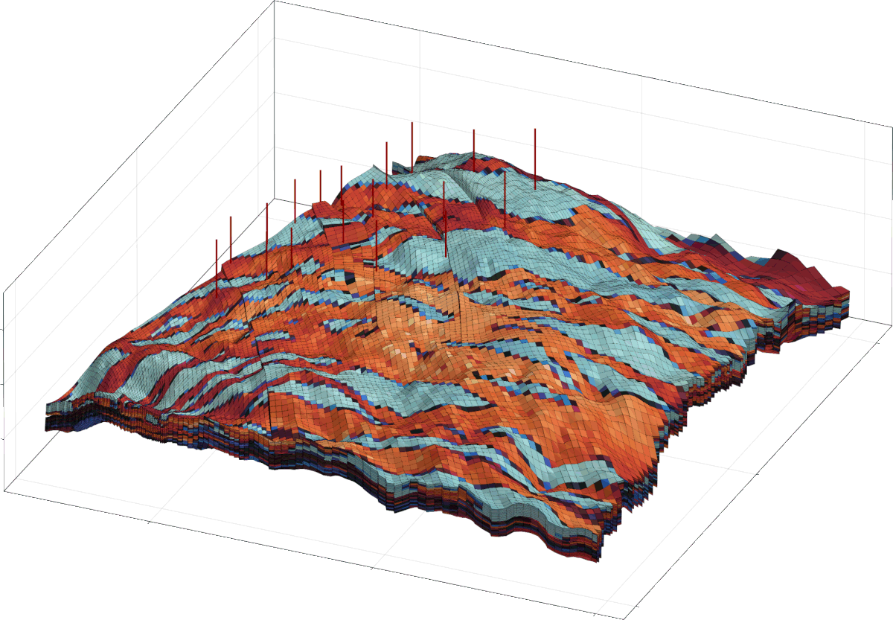

Parsing and processing of corner-point grids
Corner-point meshes are the de-facto standard format for simulation of subsurface flow. These meshes are semi-structured, but can have quite complex structure in practice due to eroded and collapsed cells and the presence of faults. This module includes a processor to convert the input format into a mesh that can be used for simulation. Converting the corner-points into a mesh with a connected topology is non-trivial, but the included algorithm has been verified on a number of real-field assets.
There are two main functions to parse and process corner-point inputs:
GeoEnergyIO.InputParser.parse_grdecl_file — Function
parse_grdecl_file("mygrid.grdecl"; actnum_path = missing, kwarg...)Parse a GRDECL file separately from the full input file. Note that the GRID section does not contain units - passing the input_units keyword is therefore highly recommended.
Keyword arguments
actnum_path=missing: Path to ACTNUM file, if this is not included in the main file.units=:si: Units to use for return values. Requiresinput_unitsto be set.input_units=nothing: The units the file is given in.verbose=false: Toggle verbosity.extra_paths: List of extra paths to parse as a part of grid section, ex:["PORO.inc", "PERM.inc"].
GeoEnergyIO.CornerPointGrid.mesh_from_grid_section — Function
mesh_from_grid_section(f, actnum = missing, repair_zcorn = true, process_pinch = false)Generate a Jutul unstructured mesh from a grid section. The input arugment f can be one of the following:
- (1) An already parsed complete data file read using
parse_data_file. The "GRID" field will be used. - (2) A parsed "GRID" section from
parse_grdecl_file. - (3) The file-name of a
.GRDECLfile to be parsed before processing.
Optionally the actnum can be specified separately. The actnum should have equal length to the number of logical cells in the grid with true/false indicating if a cell is to be included in the processed mesh.
The additional argument repair_zcorn only applies when the grid is defined using COORD/ZCORN arrays. If set to true, the monotonicity of the ZCORN coordinates in each corner-point pillar will be checked and optionally fixed prior to mesh construction. Note that if non-monotone ZCORN are fixed, if the first input argument to this function is an already parsed data structure, the ZCORN array will be mutated during fixing to avoid a copy.
Example corner point meshes
The module ships with several corner point grids suitable for testing. These include partially collapsed cells, faults and other degenerate cases that the parser should be able to handle. We can make a few plots of such test grids. The first example is a single hexahedral cell:
using GeoEnergyIO, Jutul, GLMakie
pth = GeoEnergyIO.test_input_file_path("grdecl", "1cell.txt")
grdecl = parse_grdecl_file(pth)
g = mesh_from_grid_section(grdecl)
fig, ax, plt = plot_mesh(g)
Jutul.plot_mesh_edges!(ax, g)
figTo understand a bit more of how this format behaves in practice, we can look at a faulted mesh:
using GeoEnergyIO, Jutul, GLMakie
pth = GeoEnergyIO.test_input_file_path("grdecl", "raised_col_sloped.txt")
grdecl = parse_grdecl_file(pth)
g = mesh_from_grid_section(grdecl)
fig, ax, plt = plot_mesh(g)
Jutul.plot_mesh_edges!(ax, g)
figMore complicated meshes include multiple faults. One synthetic test model is the model3 case from MRST:
using GeoEnergyIO, Jutul, GLMakie
pth = GeoEnergyIO.test_input_file_path("grdecl", "model3_5_5_5.txt")
grdecl = parse_grdecl_file(pth)
g = mesh_from_grid_section(grdecl)
ix = collect(1:number_of_cells(g))
fig = Figure()
ax = Axis3(fig[1,1], zreversed = true, azimuth = 2.0)
plot_cell_data!(ax, g, ix, colormap = :seaborn_icefire_gradient)
figWe can also parse a high-resolution version of the same case:
using GeoEnergyIO, Jutul, GLMakie
pth = GeoEnergyIO.test_input_file_path("grdecl", "model3_20_20_50.txt")
grdecl = parse_grdecl_file(pth)
g = mesh_from_grid_section(grdecl)
ix = collect(1:number_of_cells(g))
fig = Figure()
ax = Axis3(fig[1,1], zreversed = true, azimuth = 2.0)
plot_cell_data!(ax, g, ix, colormap = :seaborn_icefire_gradient)
figThe parser has been tested on many complex models. Here is an example mesh parsed from the OLYMPUS Optimization Benchmark Challenge where the parsed porosity is plotted together with the wells:

We can parse this mesh in the same manner as before:
using GeoEnergyIO, Jutul, GLMakie
pth = GeoEnergyIO.test_input_file_path("OLYMPUS_1", "OLYMPUS_GRID.GRDECL")
grdecl = parse_grdecl_file(pth)
g = mesh_from_grid_section(grdecl)
ix = collect(1:number_of_cells(g))
fig = Figure()
ax = Axis3(fig[1,1], zreversed = true, azimuth = 2.0)
plot_cell_data!(ax, g, ix, colormap = :seaborn_icefire_gradient)
figGeneration of corner-point meshes
The package also contains functionality for generating corner-point meshes.
GeoEnergyIO.CornerPointGrid.cpgrid_from_horizons — Function
cpgrid_from_horizons(X, Y, depths)
cpgrid_from_horizons(X, Y, depths, (100, 100))
cpgrid_from_horizons(X, Y, depths, sz = missing;
layer_width = 1,
transforms = [(x, y, z, x_c, y_c, i, j, k) -> z],
xy_transform = (x, y, i, j, z_t, z_b) -> (x, y, x, y)
)Create a CornerPointGrid from a set of horizons. The horizons are given as a set of 2D arrays, where each array represents the depth of a horizon at each point in the grid. The horizons must be the same size and will be used to create the top and bottom of each cell in the grid. At least two horizons must be provided, one for the top and one for the bottom of the grid, and additional horizons can be provided. If horizons intersect, the cells will be pinched so that the lowest horizon is preserved.
The grid will be created with the given X and Y coordinates which are vectors/ranges of equal length to the number of rows and columns in the depths arrays. The sz argument can be used to resample the grid to a different size in the I/J directions. If sz is not provided, the grid will have the same size as the horizons.
Keyword arguments
layer_width: Number of cells inside each layer. Can be a single integer or an array of integers with the same length as the number of horizons/depths minus one. Default is 1, i.e. that each layer has one cell in the vertical direction.transforms: A function or an array of functions that can be used to modify the depth of each cell. The function(s) should take the following arguments:x,y,z,x_c,y_c,i,j,k, wherex,yandzare the coordinates of the point to be modified,x_candy_care the coordinates of the cell center that the point belongs to,iandjare the indices of the cell in the I/J directions, andkis the index of the cell in the K direction. The function(s) should return the new depth of the point.xy_transform: A function that can be used to modify the X and Y coordinates of each pillar. The function should take the following arguments:x,y,i,j,z_t,z_b, wherexandyare the original X and Y coordinates of the line,iandjare the indices of the line in the I/J directions, andz_tandz_bare the top and bottom depths of the line. The function should return the new X and Y coordinates of the line.
Example of mesh generation
Let us look at how the corner-point generator can be used in practice. A common concept of horizons, a more or less continious surface where the litography changes significantly. Typically these horizons would come from data, but for the purpose of this example we will generate some noisy surfaces with different averages and trends. One matrix for the top surface, one for the middle and one for the bottom of our domain.
using GeoEnergyIO, Jutul, GLMakie
nx = ny = 25
Lx = 1000.0
Ly = 800.0
xrng = range(0.0, Lx, nx)
yrng = range(0.0, Ly, ny)
depths = [
5 .*rand(nx, ny),
5 .*rand(nx, ny) .+ 30.0,
5 .*rand(nx, ny) .+ 100.0 .- xrng/Lx*40.0
]
fig = Figure()
ax = Axis3(fig[1, 1], zreversed = true)
colors = Makie.wong_colors()
for (c, layer) in enumerate(depths)
surface!(ax, xrng, yrng, layer, color = fill(colors[c], nx, ny), shading = NoShading)
end
figWe generate a mesh based on these depth matrices for each horizon, creating two layers with three cells each, and turn the keyword Dict into a mesh:
grd = cpgrid_from_horizons(xrng, yrng, depths, layer_width = 3)
mesh = mesh_from_grid_section(grd)
fig, ax, plt = plot_cell_data(mesh, grd["LAYERNUM"][mesh.cell_map], colormap = :winter)
Jutul.plot_mesh_edges!(ax, mesh)
figLet us say that the data was at a different resolution than what we want for our simulation mesh. We can increase or decrease the resolution by a third keyword argument, which will use linear interpolation to add additional points:
grd = cpgrid_from_horizons(xrng, yrng, depths, (100, 100), layer_width = [20, 25])
mesh2 = mesh_from_grid_section(grd)
fig, ax, plt = plot_cell_data(mesh2, grd["LAYERNUM"][mesh2.cell_map], colormap = :winter)
Jutul.plot_mesh_edges!(ax, mesh2)
figWe can also add various transforms to make the model complex. There are two types of supported transforms:
- Vertical transforms, which can be multiple transforms that change the depths of corner points based on the cell centroid and original corner points. These are typically used to create faults.
- Pillar transforms, which can alter the top and bottom points of the pillars that define the corner point mesh. A single transform is supported at the time.
We will now do the following:
- Introduce two faults, one sloping and one with fixed throw.
- Add a pillar transform that makes the mesh smaller for increasing depth.
fault1 = (x, y, z, x_c, y_c, i, j, k) -> ifelse(x_c/Lx + 0.25*y_c/Ly > 0.5, z + 50.0.*(y/Ly) + 15.0, z)
fault2 = (x, y, z, x_c, y_c, i, j, k) -> ifelse(y_c/Ly > 0.5, z + 25.0, z)
transforms = [fault1, fault2]
xy_transform = (x, y, i, j, zt, zb) -> (x, y, 0.9*x, 0.8*y)
grd = cpgrid_from_horizons(xrng, yrng, depths,
layer_width = 3,
transforms = transforms,
xy_transform = xy_transform
)
mesh3 = mesh_from_grid_section(grd)
fig, ax, plt = plot_cell_data(mesh3, grd["LAYERNUM"][mesh3.cell_map], colormap = :winter)
ax.azimuth[] = 13.327
ax.elevation[] = 0.187
Jutul.plot_mesh_edges!(ax, mesh3)
figWe can also make cells inactive by setting NaN values in the depths. Note that as each entry in depths corresponds to the intersection between two layers, we set NaN in the top and bottom depths to impact the two layers separately. For more fine grained control, the "ACTNUM" array is also present and can be altered before mesh_from_grid_section is called.
for i in 1:nx
for j in 1:ny
center_dist = sqrt((xrng[i] - 500)^2 + (yrng[j] - 400)^2)
if center_dist > 400
depths[1][i, j] = NaN
end
if center_dist > 500
depths[3][i, j] = NaN
end
end
end
grd = cpgrid_from_horizons(xrng, yrng, depths, layer_width = [20, 25])
mesh4 = mesh_from_grid_section(grd)
fig, ax, plt = plot_cell_data(mesh4, grd["LAYERNUM"][mesh4.cell_map], colormap = :winter)
Jutul.plot_mesh_edges!(ax, mesh4)
figUtilities
GeoEnergyIO.InputParser.get_data_file_cell_region — Function
region = get_data_file_cell_region(data, t::Symbol; active = nothing)
satnum = get_data_file_cell_region(data, :satnum)
pvtnum = get_data_file_cell_region(data, :pvtnum, active = 1:10)Get the region indicator of some type for each cell of the domain stored in data (the output from parse_data_file). The optional keyword argument active can be used to extract the values for a subset of cells.
t should be one of the following:
:satnum(saturation function region):pvtnum(PVT function region):eqlnum(equilibriation region):eosnum(equation-of-state region)
GeoEnergyIO.InputParser.number_of_tables — Function
number_of_tables(outer_data, t::Symbol)Number of declared tables for given type t. Should be one of the following:
:satnum(saturation function region):pvtnum(PVT function region):eqlnum(equilibriation region):eosnum(equation-of-state region)